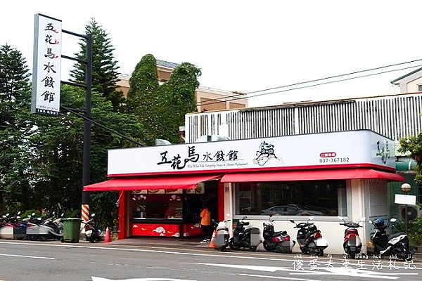
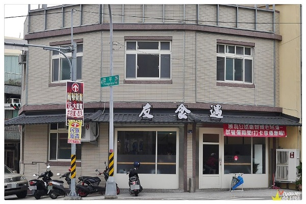
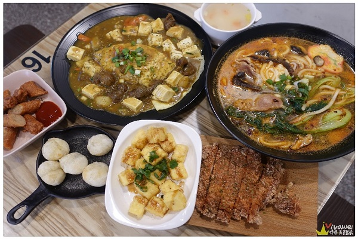
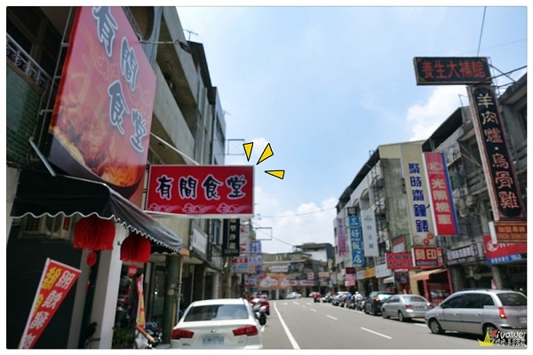
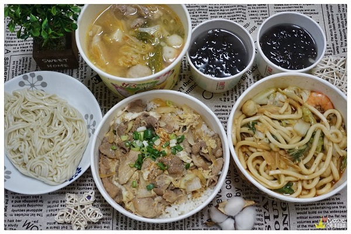

[食記] 苗栗小吃
苗栗市美食小吃推薦「3間在地人推薦麵飯小吃」，
只能說每一間小吃店各有特色，也有各自的擁護者，
文章內整理了多年來我在苗栗市吃的麵飯小吃，
還有在該店我自己比較推薦的餐點口味，
提供給大家出外用餐時多些參考選擇！也歡迎留言與我分享你的愛店喔！
Top1:五花馬水餃館

苗栗市美食『五花馬水餃館』位於民族路上、
苗栗巨蛋的對面！這是一間全國連鎖的水餃店！
也終於在苗栗市展店啦！店家販售各式水餃、麵、飯食、與小點等！
內用小米粥更是免費喝到爽！
文內附上店家地址、電話、營業時間與菜單提供參考。
地址 : 苗栗市民族路172號
電話 : 037-367182
時間 : 11:00-14:00 17:00-21:00 (每週三公休)
Top2:友食遇
 
苗栗市美食「友食遇」，北苗史奴比鍋燒麵技術傳授，
打卡贈還送炸豆腐一份，還有貼心提供兩款素食類餐點！
餐點口味分量足夠，口味也還不錯，
缺點就是等餐時間較長，需要多一點的耐心啊！
文章內有店家地址、電話、營業時間、完整菜單價目表menu供參考。
地址：苗栗市中華路162-1號
電話：037-268600
時間：11:00-14:00,17:00-20:00(每週二公休)
Top3:有間食堂
 